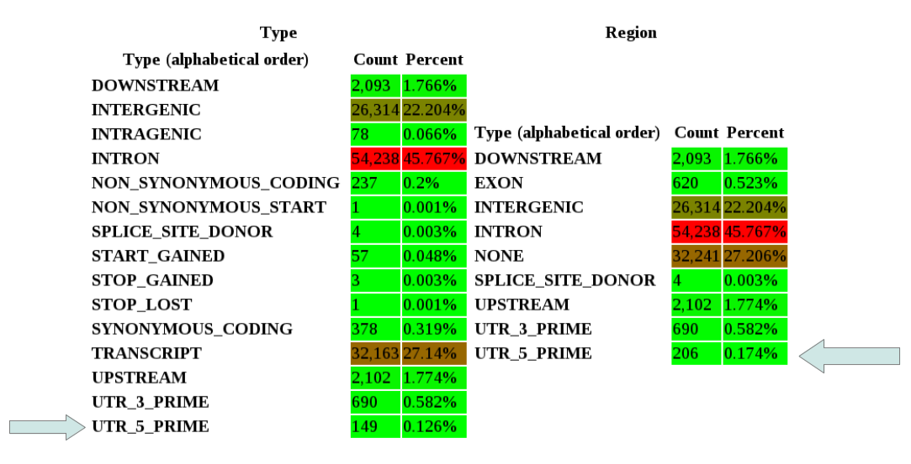

1. Introduction
SnpEff is a variant annotation and effect prediction tool. It annotates and predicts the effects of genetic variants (such as amino acid changes).
Variants
By genetic variant we mean difference between a genome and a "reference" genome.
As an example, imagine we are sequencing a "sample".
Here "sample" can mean anything that you are interested in studing, from a cell culture, to a mouse or a cancer patient.
It is a standard procedure to compare your sample sequences against the corresponding "reference genome".
For instance you may compare the cancer patient genome against the current "reference genome" (at the time of this writing, it is 'hg19').
In a typical sequencing experiment, you will find many places in the genome where your sample differs from the reference genome.
These are called "genomic variants" or just "variants".
Typically, variants are catogorized as follows:
| Name | What is means | Example |
|---|---|---|
| SNP | Single-Nucleotide Polymorphism | Reference = 'A', Sample = 'C' |
| Ins | Insertion | Reference = 'A', Sample = 'AGT' |
| Del | Deletion | Reference = 'AC', Sample = 'C' |
| MNP | Multiple-nucleotide polymorphism | Reference = 'ATA', Sample = 'GTC' |
Annotations
So, you have a huge file describing all the differences between your sample and the reference genome.
But you want to know more about these variants than just their genetic coordinates.
E.g.: Are they in a gene? In an exon? Do they change protein coding? Do they cause premature stop codons?
SnpEff can help you answer all these questions.
The process of adding this information about the variants is called "Annotation".
SnpEff provides several degrees of annotations, from simple (e.g. which gene is each variant affecting) to exremelly complex annotations (e.g. will this non-coding variant affect the expreesion of a gene?).
It should be noted that the more complex the annotations, the more it relies in computational predictions.
Such somputational predictions are sometimes incorrect.
Results cannot be trusted blindly. SnpEff results may have to analyzed and independently validated.
Databases
In order to produce the annotations, SnpEff requires a database.
We build these databases using informations from trusted resources.
Currently, there are pre-built database for over 2,500 reference genomes.
This means that 99% of the cases are covered.
In some very rare ocasions, people need to build a database for an organism not currently supported (e.g. the genome is not publicly available).
In most cases, this can be done and there is a section of this manual teaching how to build your own SnpEff database.
If you have problems adding you own organism, send me an email and I'll do my best to help you out.
Summary
A typical SnpEff use case would be:
- Input:
The inputs are predicted variants (SNPs, insertions, deletions and MNPs).
The input file is usually obtained as a result of a sequencing experiment, and it is usually in variant call format (VCF).
- Output: SnpEff analyzes the input variants. It annotates the variants and calculates the effects they produce on known genes (e.g. amino acid changes). A list of effects and annotations that SnpEff can calculate can be found here.
Citing
If you are using SnpEff or SnpSift, please cite our work as shown here. Thank you!
2. Download & Install
Download and installing SnpEff it pretty easy.
System requirements
SnpEff requires that you have Java v1.6 or later installed (any modern operating system has it).
You'll probably need at least 2Gb of memory.
The amount of memory used can vary significantly depending on genome size and data analysis type you are doing.
Downloading and Installing
In order to download and install the program, you can follow the directions here.
How is it licensed?
SnpEff is open source. It is released mainly as "LGPLv3". If you prefer another open source license, just contact me and I'll try to add your preferred license as well.
Source code
The project is hosted at SourceForge.
Here is the SVN command to check out the development version of the code:
svn co https://snpeff.svn.sourceforge.net/svnroot/snpeff/SnpEffect/trunk
Configuration
The only configuration file is "snpEff.config".
Most configuration parameters, are explained in the comments in the same config file, so I won't repeat the explanation here :-)
Usually you will only need to change the "data_dir" parameter.
This parameter points to the "data" directory where you installed the tool (i.e. in unix systems, this is $HOME/snpEff/data).
3. Running SnpEff
We show some basic examples how to use SnpEff.
Command line vs Web interface
In order to run SnpEff you need to be comfortable running command from a command line terminal.
If you are not, then it is probably a good idea to ask you systems adminitrator to install a Galaxy server and use the web interface.
You can also use the open Galaxy server, but functionality may be limited and SnpEff versions may not be updated frequently.
Usage example
In this example, we will annotate a variants file using the human reference genome.
As an input, we will use a Variant Call Format (VCF) file.
VCF is the de-facto standard for genetic variants.
In this example we will use a file 'demo.1kg.vcf.gz', which is provided in the distribution.
# Go to SnpEff install sirectory cd ~/snpEff # Download human database 'hg19' java -jar snpEff.jar download -v hg19 # Annotate java -Xmx2g -jar snpEff.jar hg19 -v demo.1kg.vcf > demo.1kg.snpeff.vcfHere is an example of some entries in the annotated output file. You can see the 'EFF' field was added, predicting STOP_GAINED protein changes:
$ cat demo.1kg.snpeff.vcf | grep STOP_ 1 889455 . G A 100.0 PASS ...;EFF=STOP_GAINED(HIGH|NONSENSE|Cag/Tag|Q236*... 1 897062 . C T 100.0 PASS ...;EFF=STOP_GAINED(HIGH|NONSENSE|Cag/Tag|Q141*... 1 900375 . G A 100.0 PASS ...;EFF=STOP_GAINED(HIGH|NONSENSE|tGg/tAg|W578*...Note: The real output was edited for readibility reasons.
Runnig from another directory
When you run SnpEff from a different directory than your install directory, you have to specify where the config file is located using the '-c' command line option.
java -Xmx2g path/to/snpEff/snpEff.jar -c path/to/snpEff/snpEff.config GRCh37.70 path/to/snps.vcf
Java memory options
By default the amount of memory set by a java process is set too low.
If you don't assigm more memory to the process, you will most likely have an "OutOfMemory" error.
You should set the amount of memory in your java virtual machine to, at least, 2 Gb.
This can be easily done using the Java command line option "-XmX".
E.g. In this example I use 4Gb:
# Run using 4 Gb of memory java -Xmx4G snpEff.jar hg19 path/to/your/files/snps.vcfNote: There is no space between "-Xmx" and "4G".
Running SnpEff in the Cloud
You can run SnpEff in a "the Cloud" exactly the same way as running it on your local computer.
You should not have any problems at all.
Here is an example of installing it and running it on an Amazon EC2 instance (virtual machine):
$ ssh -i ./aws_amazon/pcingola_aws.pem ec2-user@ec2-54-234-14-244.compute-1.amazonaws.com
__| __|_ )
_| ( / Amazon Linux AMI
___|\___|___|
[ec2-user@ip-10-2-202-163 ~]$ wget http://sourceforge.net/projects/snpeff/files/snpEff_latest_core.zip
[ec2-user@ip-10-2-202-163 ~]$ unzip snpEff_latest_core.zip
[ec2-user@ip-10-2-202-163 ~]$ cd snpEff_3_1/
[ec2-user@ip-10-2-202-163 snpEff_3_1]$ java -jar snpEff.jar download -v hg19
00:00:00.000 Downloading database for 'hg19'
...
00:00:36.340 Done
[ec2-user@ip-10-2-202-163 snpEff_3_1]$ java -Xmx4G -jar snpEff.jar dump -v hg19 > /dev/null
00:00:00.000 Reading database for genome 'hg19' (this might take a while)
00:00:20.688 done
00:00:20.688 Building interval forest
00:00:33.110 Done.
As you can see, it's very simple.
Command line options
In order to see all available options, you can run
java -jar snpEff.jar -helpWe'll explain many of those options in detail in the following chapters.
Loading the database
One of the first thins SnpEff has to do is to load the database.
Usually it takes frmo a few seconds to a couple of minutes, depending on database size.
Complex databases, like human, require more time to load.
After the database is loaded, SnpEff can analyze thousands of variants per second.
4. Sequence data analysis
Here we show an example on how to get from Sequenceing data to an annotated variants file
Sequencing data example
This is an extremelly simplified version on how to analyze the data from scratch
This is not meant to be a tutorial on sequencing analysis as it would be way beyond the scope of this handbook.
Let's assume you have sequence data in FASTQ format (file "s.fastq") and your reference genome is dm5.34 (fly genome)
# Download the genome, uncompress and rename file wget ftp://ftp.flybase.net/genomes/Drosophila_melanogaster/dmel_r5.34_FB2011_02/fasta/dmel-all-chromosome-r5.34.fasta.gz gunzip dmel-all-chromosome-r5.34.fasta.gz mv dmel-all-chromosome-r5.34.fasta dm5.34.fasta # Create a genome index (we assume you installed BWA http://bio-bwa.sourceforge.net/) bwa index -bwtsw dm5.34.fasta # Map sequences to the genome: Create SAI file bwa aln -bwtsw dm5.34.fasta s.fastq > s.sai # Map sequences to the genome: Create SAM file bwa samse dm5.34.fasta s.sai s.fastq > s.sam # Create BAM file (we assume you installed SamTools http://samtools.sourceforge.net/) samtools view -S -b s.sam > s.bam # Sort BAM file (will create s_sort.bam) samtools sort s.bam s_sort # Create VCF file (BcfTools is part of samtools distribution) samtools mpileup -uf dm5.34.fasta s_sort.bam | bcftools view -vcg - > s.vcf # Analyze variants using snpEff java -Xmx4g -jar snpEff.jar -vcf4 dm5.34 s.vcf > s_snpeff.txtThis highly simplified sequencing data analysis pipeline, has the common basic steps
- Index the reference genome (bwa)
- Map reads to reference genome (bwa)
- Call varaints (bcftools)
- Annotate variants (SnpEff)
5. Input files
Files used as input to SnpEff must comply with standard formats. Here we describe supported input data formats.
VCF
As we mentioned before, Variant Call Format (VCF) is the recomended format for input files.
This is the format used by the "1000 Genomes Project", and is currently considered the de-facto standard for genomic variants.
Furthermore, most variant calling programs output VCF files, so it is also the simplest format to use.
In a nutshell, VCF format is tab-separated text file having the following columns:
- Chromosome name
- Position
- Variant's ID
- Reference genome
- Alteranative (i.e. variant)
- Quality score
- Filter (whether or not the variant passed quality filters)
- INFO : Generic information about this variant. SnpEff adds annotation information in this column.
#CHROM POS ID REF ALT QUAL FILTER INFO 20 14370 rs6054257 G A 29 PASS NS=3;DP=14;AF=0.5;DB;H2 20 17330 . T A 3 q10 NS=3;DP=11;AF=0.017Note that the first line is header information. Header lines start with '#'
TXT:
TXT format is currently deprecated and discurraged.
TXT file format must be tab-separated, containing columns that correspond to:
- chromosome_name
- chromosome_position
- reference sequence
- changed sequence: A slash is used to separate two alleles
- strand: {+,-} (optional)
- quality (optional)
- coverage (optional)
5 140532 T C + 12 1017956 T A + 45 12 2 946507 G C + 23 8 14 19584687 C T - 19 66520 G -G/-G + 8 150029 A */+T +
TXT: Representing an heterozygous variant
Here we describe the format of SnpEff's output files and the information added.
VCF output format
VCF EFF field
Effects information is added to the INFO field using an 'EFF' tag.
There can be multiple effects separated by comma. The format for each effect is:
Effect ( Effefct_Impact | Codon_Change | Amino_Acid_change | Gene_Name | Gene_BioType | Coding | Transcript | Exon [ | ERRORS | WARNINGS ] )
VCF Header lines Mutiple effects per VCF line
TXT format is currently deprecated and discurraged.
When representing a heterozygous SNP you can use IUB codes: M=A/C, R=A/G, W=A/T, S=C/G, Y=C/T and K=G/T.
Indels are indicated by, for example, */+A, -A/* or +CC/-C. There is no difference between */+A or +A/*.
6. Output files
As we mentioned in the previous chapter, VCF is the default input format.
It is highly recomended to use VCF as input and output format, since it is a standard format that can be also used by other tools and software packages.
Thus VCF makes it much easier to integrate genomic data processing pipelines.
SnpEff adds annotation information to the INFO field of a VCF file.
The INFO field is the eigth column of a VCF file, see previous section for a quick example or take a look at the VCF specification for details.
Here is an example of a file before and after being annotated using SnpEff:
VCF file before annotations
#CHROM POS ID REF ALT QUAL FILTER INFO
1 889455 . G A 100.0 PASS AF=0.0005
1 897062 . C T 100.0 PASS AF=0.0005
VCF file after being annotated using SnpEff
#CHROM POS ID REF ALT QUAL FILTER INFO
1 889455 . G A 100.0 PASS AF=0.0005;EFF=STOP_GAINED(HIGH|NONSENSE|Cag/Tag|Q236*|749|NOC2L||CODING|NM_015658|)
1 897062 . C T 100.0 PASS AF=0.0005;EFF=STOP_GAINED(HIGH|NONSENSE|Cag/Tag|Q141*|642|KLHL17||CODING|NM_198317|)
A you can see, SnpEff added an 'EFF' tag to the INFO field (eigth column).
EFF Sub-field Meaning
Effect Effect of this variant. See details here.
Effect impact Effect impact {High, Moderate, Low, Modifier}. See details here.
Functional class Functional class {NONE, SILENT, MISSENSE, NONSENSE}.
Codon_Change Codon change: old_codon/new_codon
Amino_Acid_change Amino acid change: old_AA AA_position/new_AA (e.g. 'E30K')
Amino_Acid_length Length of protein in amino acids (actually, transcription length divided by 3).
Gene_name Gene name
Transcript_bioType Transcript bioType, if available.
Gene_Coding [CODING | NON_CODING]. This field is 'CODING' if any transcript of the gene is marked as protein coding.
Trancript Transcript ID (usually ENSEMBL IDs)
Exon Exon ID (usually ENSEMBL IDs)
Warnings Any warnings or errors (not shown if empty).
SnpEff updates the header of the VCF file to reflect aditional fields.
This is required by the VCF specification.
SnpEff also adds the command line options used to annotate the file as well as SnpEff's version, so you can keep track of what exactly was done.
Here is an example of some header lines added to an anotated file:
##SnpEffVersion="SnpEff 3.1m (build 2013-02-08)"
##SnpEffCmd="SnpEff hg19 demo.1kg.vcf "
##INFO=<ID=EFF,Number=.,Type=String,Description="Predicted effects for this variant.Format: 'Effect ( Effect_Impact | Functional_Class | Codon_Change | Amino_Acid_change| Amino_Acid_length | Gene_Name | Gene_BioType | Coding | Transcript | Exon [ | ERRORS | WARNINGS ] )' \">
Usually there is more than one effect reported in each EFF field.
There are several reasons for this:
#CHROM POS ID REF ALT QUAL FILTER INFO
1 889455 . G A,T . . AF=0.0005
In this case SnpEff will report the effect of each variant on each gene and each transcript.
Summary output file
SnpEff creates an additional output file showing overall statistics.
This "stats" file is an HTML file which can be opned using a web browser.
You can find an example of a 'stats' file here.
The program performs some statistics and saves them to the file 'snpEff_summary.html' on the
directory where snpEff is being executed. You can see the file, by opeining it in your browser.
You can change the default location by using the '-stats' command line option. This also changes the location of the TXT summary file.
E.g.: In the stats file, you can see coverage histogram plots like this one
Details about Hom/Het calculation (summary file and TXT output format)
In older formats, there used to be one sample per file, so
identifying Hom/Het in a per variant basis made sense.
In VCF files, where many samples are analyzed simultaneously,
identification of Hom/Het should be done in a per sample basis
instead of per variant basis. In an attempt to output that field I
used a majority vote (i.e. if most samples are Hom, I output
Hom, otherwise, Het). This is not strictly correct and, it
may also be confusing.
For this reason, the output is empty when using multi-sample files, such as VCF.
Unless the file contains only one sample (i.e. only one genotype field)
TXT output format
TXT format is currently deprecated and discurraged.
The TXT output format consist of one line per effect.
This means that you usually get more than one line per SNP since the same SNP may affect several different transcripts in the same gene.
The format consist of tab separated columns:
| Column | Meaning |
|---|---|
| Chromosome | Chromosome name (usually without any leading 'chr' string) |
| Position | One based position |
| Reference | Reference |
| Change | Sequence change |
| Change type | Type of change {SNP, MNP, INS, DEL} |
| Homozygous | Is this homozygous or heterozygous {Hom, Het} |
| Quality | Quality score (from input file) |
| Coverage | Coverage (from input file) |
| Warnings | Any warnings or errors. |
| Gene_ID | Gene ID (usually ENSEMBL) |
| Gene_name | Gene name |
| Bio_type | BioType, as reported by ENSEMBL. |
| Trancript_ID | Transcript ID (usually ENSEMBL) |
| Exon_ID | Exon ID (usually ENSEMBL) |
| Exon_Rank | Exon number on a transcript |
| Effect | Effect of this variant. See details below. |
| old_AA/new_AA | Amino acid change |
| old_codon/new_codon | Codon change |
| Codon_Num(CDS) | Codon number in CDS |
| Codon_degenaracy | Codon degenaracy (see below). |
| CDS_size | CDS size in bases |
| Custom_interval_ID | If any custom interval was used, add the IDs here (may be more than one). |
This is an example of an output file:
chr2L 35041 T K SNP Het 50 FBgn0051973 Cda5 FBtr0078164 FBgn0051973:11 11 SYNONYMOUS_CODING Q/Q CAA/CAA 332 5997
chr2L 35041 T K SNP Het 50 FBgn0051973 Cda5 FBtr0078163 FBgn0051973:11 11 NON_SYNONYMOUS_CODING Q/H CAA/CAC 332 3120
chr2L 200401 C Y SNP Het 228 FBgn0016977 spen FBtr0078121 CG18497:10 10 STOP_GAINED Y/* TAC/TAG 5240 16602
chr2L 194601 C Y SNP Het 228 FBgn0016977 spen FBtr0078122 CG18497:6 6 NON_SYNONYMOUS_CODING P/A CCG/GCG 3473 16683
chr2L 779563 A R SNP Het 168 FBgn0031277 CG13947 FBtr0078005 FBgn0031277:1 1 STOP_LOST */Y TAA/TAC 120 360
chr2L 856021 * +CGGAGGAGG/* INS Het 267 FBgn0031288 CG13949 FBtr0078017 FBgn0031288:3 3 FRAME_SHIFT 118 438
chr2L 856890 C Y SNP Het 201 FBgn0029095 aru FBtr0078031 DOWNSTREAM: 43 bases
chr2L 871556 G R SNP Het 228 FBgn0053526 PNUTS FBtr0091487 CG33526:2 2 5PRIME_UTR: 18 bases from TSS
chr2L 878267 T W SNP Het 228 WARNING: Base is 'G' but SNP says 'T'. FBgn0031292 CG15824 FBtr0078029 CG15824:14 14 3PRIME_UTR: 14 bases from transcript end
Meaning of 'Degeneracy' column
Here is an explanation form Stephen Wright (Univ. Toronto), who requested to add this feature
"...a fourfold degenerate site would be a site where any change is synonymous. So the third codon position for the arginine CGN, is a fourfold degenerate site, as is the third codon position for valine, alanine, etc. Similarly, all second positions of a codon are zerofold degenerate, since any change is nonsynonymous. Many first codon positions are also zerofold degenerate, however, for example, the first codon position of AGG is NOT zerofold, because a shift to CGG is a synonymous change."
Coordinates differences between VCT and TXT outputs
There are some situations when there seems to be a difference between TXT output coordinates and VCF output coordinates.
This happens because sometimes VCF files have a coordinate that does not start exactly were the variant is.
Here is an example:
VCF line: "chr10 102770293 . tgctgcggctgcggctgcggctacggctgcggct tGCTGCGgctgcggctgcggctgcggctacggctgcggct" INS reported by SnpEff: "chr10 102770315 * +GCGGCT INS"
At first glace, these two look different, since 102770293 is not the same as 102770315. But if you look at the sequences:
tgctgcggctgcggctgcggct acggctgcggct REF (from VCF file)
|||||||||||||||||||||| ||||||||||||
tgctgcggctgcggctgcggctgcggctacggctgcggct ALT (from VCF file)
| | | ||||||
| | | gcggct INS (reported by SnpEff TXT format)
| | | |
102770293 | | Position (VCF)
| | |
102770300 | |
| |
102770310
|
102770315 Position (TXT)
So the two VCF and TXT representations are equivalent.
Counting total number of effects of a given type
Some people try to count the number of effects in a file by doing (assuming we want to count how many MODIFIER efefcts we have):
grep -o MODIFIER output.eff.vcf | wc -l
This is incorrect because a VCF line can have multiple effects (e.g. when there are multiple transcripts in a gene). A proper way to count effects would be:
cat output.eff.vcf \ | cut -f 8 \ | tr ";" "\n" \ | grep ^EFF= \ | cut -f 2 -d = \ | tr "," "\n" \ | grep MODIFIER \ | wc -lBrief explanation:
| cut -f 8 | Extract INFO fields |
| tr ";" "\n" | Expand each field into one line |
| grep ^EFF= | Only keep 'EFF' fields |
| cut -f 2 -d = | Keep only the effect data (drop the 'EFF=' part) |
| tr "," "\n" | Expand effects to multiple lines |
| grep MODIFIER | wc -l | Count the ones you want (in this example 'MODIFIER') |
7. Effect prediction details
We describe the effects predicted by SnpEff
Here is a list of effects and some brief explanations:| Effect | Note | Example |
|---|---|---|
| INTERGENIC | The variant is in an intergenic region | |
| UPSTREAM | Upstream of a gene (default length: 5K bases) | |
| UTR_5_PRIME | Variant hits 5'UTR region | |
| UTR_5_DELETED | The variant deletes an exon which is in the 5'UTR of the transcript | |
| START_GAINED | A variant in 5'UTR region produces a three base sequence that can be a START codon. | |
| SPLICE_SITE_ACCEPTOR | The variant hits a splice acceptor site (defined as two bases before exon start, except for the first exon). | |
| SPLICE_SITE_DONOR | The variant hits a Splice donor site (defined as two bases after coding exon end, except for the last exon). | |
| START_LOST | Variant causes start codon to be mutated into a non-start codon. | aTg/aGg, M/R |
| SYNONYMOUS_START | Variant causes start codon to be mutated into another start codon. | Ttg/Ctg, L/L (TTG and CTG can be START codons) |
| CDS | The variant hits a CDS. | |
| GENE | The variant hits a gene. | |
| TRANSCRIPT | The variant hits a transcript. | |
| EXON | The vairant hits an exon. | |
| EXON_DELETED | A deletion removes the whole exon. | |
| NON_SYNONYMOUS_CODING | Variant causes a codon that produces a different amino acid | Tgg/Cgg, W/R |
| SYNONYMOUS_CODING | Variant causes a codon that produces the same amino acid | Ttg/Ctg, L/L |
| FRAME_SHIFT | Insertion or deletion causes a frame shift | An indel size is not multple of 3 |
| CODON_CHANGE | One or many codons are changed | An MNP of size multiple of 3 |
| CODON_INSERTION | One or many codons are inserted | An insert multiple of three in a codon boundary |
| CODON_CHANGE_PLUS_CODON_INSERTION | One codon is changed and one or many codons are inserted | An insert of size multiple of three, not at codon boundary |
| CODON_DELETION | One or many codons are deleted | A deletion multiple of three at codon boundary |
| CODON_CHANGE_PLUS_CODON_DELETION | One codon is changed and one or more codons are deleted | A deletion of size multiple of three, not at codon boundary |
| STOP_GAINED | Variant causes a STOP codon | Cag/Tag, Q/* |
| SYNONYMOUS_STOP | Variant causes stop codon to be mutated into another stop codon. | taA/taG, */* |
| STOP_LOST | Variant causes stop codon to be mutated into a non-stop codon | Tga/Cga, */R |
| INTRON | Variant hits and intron. Technically, hits no exon in the transcript. | |
| UTR_3_PRIME | Variant hits 3'UTR region | |
| UTR_3_DELETED | The variant deletes an exon which is in the 3'UTR of the transcript | |
| DOWNSTREAM | Downstream of a gene (default length: 5K bases) | |
| INTRON_CONSERVED | The variant is in a highly conserved intronic region | |
| INTERGENIC_CONSERVED | The variant is in a highly conserved intergenic region | |
| INTRAGENIC | The variant hits a gene, but no transcripts within the gene | |
| RARE_AMINO_ACID | The variant hits a rare amino acid thus is likely to produce protein loss of function | |
| NON_SYNONYMOUS_START | Variant causes start codon to be mutated into another start codon (the new codon produces a different AA). | Atg/Ctg, M/L (ATG and CTG can be START codons) |
Details about Rare amino acid effect
These are amino acids that occurs very rarely in an organism.
For instance, humans are supposed to use 20 amino acids, but
there is also one rare AA. Selenocysteine, single letter
code 'U', appears roughly 100 times in the whole genome.
The amino acid is so rare that usually it does not appear
in codon translation tables. It is encoded as UGA, which usually
means a STOP codon. Secondary RNA
structures are assumed to enable this special translation.
A variant in one of these sites is likely to cause a loss of
function in the protein. E.g. in case of a Selenocysteine, a
loss of a selenium molecule is likely to cause loss of function.
Put it simply, the assumption is that there is a great deal of trouble
to get that non-standard amino acid there, so it must be important.
RARE_AMINO_ACID mark is used to show that special attention should
be paid in these cases.
When the variant hits a RARE_AMINO_ACID mark, it is likely that
the 'old_AA/new_AA' field will be incorrect. This may happen because
the amino acid is not predictable using a codon table.
Effect impact
Efefcts are categorized by 'impact': {High, Moderate, Low, Modifier}.
This are pre-defined categories to help users find more significant variants.
Categories must be used with care, they were created only to help and simplify the filtering process.
Obviously, there is no way to predict wether a "high impact" or a "low impact" variant is the one producing you phenotype of interest.
Impact categories:
| Impact | Effects |
|---|---|
| High |
SPLICE_SITE_ACCEPTOR SPLICE_SITE_DONOR START_LOST EXON_DELETED FRAME_SHIFT STOP_GAINED STOP_LOST RARE_AMINO_ACID |
| Moderate |
NON_SYNONYMOUS_CODING CODON_CHANGE CODON_INSERTION CODON_CHANGE_PLUS_CODON_INSERTION CODON_DELETION CODON_CHANGE_PLUS_CODON_DELETION UTR_5_DELETED UTR_3_DELETED |
| Low |
SYNONYMOUS_START NON_SYNONYMOUS_START START_GAINED SYNONYMOUS_CODING SYNONYMOUS_STOP |
| Modifier |
UTR_5_PRIME UTR_3_PRIME REGULATION UPSTREAM DOWNSTREAM GENE TRANSCRIPT EXON INTRON_CONSERVED INTRON INTRAGENIC INTERGENIC INTERGENIC_CONSERVED NONE CHROMOSOME CUSTOM CDS |
Loss of function and nonsense-mediated decay predictions
Loss of function ('LOF') and nonsense-mediated decay ('NMD') predictions can be activated by using '-lof' command line opion.
Details on how these variants work, can be found in these slides
Usage example:
java –Xmx4g -jar snpEff.jar –v \ -lof \ GRCh37.68 \ file.vcf.gz > file.eff.vcfSnpEff adds 'LOF' and 'MND' tags to INFO fields (column 8 in VCF format). LOF and NMD tags have the following format:
Gene | ID | num_transcripts | percent_affectedWhere:
| Field | Description |
|---|---|
| Gene | Gene name |
| ID | Gene ID (usually ENSEMBL) |
| Num_transcripts | Number of transcripts in this gene |
| percent_affected | Percentage of transcripts affected by this variant. |
Example: If we have this effect
EFF=…, SPLICE_SITE_DONOR(HIGH||||639|ILDR2|protein_coding|CODING|ENST00000271417|1)and the corresponding LOF tag is
LOF=ILDR2|ENSG00000143195|7|1.00The meaning of the LOF tag is:
| Field | Description |
|---|---|
| Gene | ILDR2 |
| ID | ENSG00000143195 |
| Num_transcripts | There are 7 transcripts in this gene |
| percent_affected | 100% of transcripts are affected by this variant. |
8. Output filters
We describe how to filter the out or narrow down the number of results.
Annotating only some intervals
You can use the '-fi' option (a.k.a. '-filterInterval). For instance, let's assume you have an interval file 'intervals.bed':
2L 10000 10999 2L 12000 12999 2L 14000 14999 2L 16000 16999 2L 18000 18999In order to get only changes that match your intervals, you can use the command:
java -Xmx4G -jar snpEff.jar -fi intervals.bed dm5.30 file.vcfNote: You may specify multiple files by using '-fi' many times.
What is the adequate output for GATK?
You should use the '-o gatk' command line option to avoid problems. The reason is that, even though GATK uses VCF, but sometimes new formats of the 'EFF' info field might cause trouble. This happens when switching from SnpEff v2.X to SnpEff v3.0, since the latest GATK version still uses an older format.Output summary page
"Effects by type" vs "Effects by region"
SnpEff annotates variants. Variants produce effect of difference "types" (e.g. NON_SYNONYMOUS_CODING, STOP_GAINED). These variants affect regions of the genome (e.g. EXON, INTRON).The two tables count how many effects for each type and for each region exists.
E.g.: In an EXON region, you can have all the following effect types: NON_SYNONYMOUS_CODING, SYNONYMOUS_CODING, FRAME_SHIFT, STOP_GAINED, etc.
The complicated part is that some effect types affect a region that has the same name (yes, I know, this is confusing).
E.g.: In a UTR_5_PRIME region you can have UTR_5_PRIME and START_GAINED effect type.
This means that the number of both tables are not exactly the same, because the labels don't mean the same.
See the next figure as an example

So the number of effects that affect a UTR_5_PRIME region is 206. Of those, 57 are effects type START_GAINED and 149 are effects type UTR_5_PRIME.
How exactly are effect type and effect region related? See the following table
| Effect Type | ..affect Region |
|---|---|
|
NONE CHROMOSOME CUSTOM CDS |
NONE |
|
INTERGENIC INTERGENIC_CONSERVED |
INTERGENIC |
|
UPSTREAM |
UPSTREAM |
|
UTR_5_PRIME UTR_5_DELETED START_GAINED |
UTR_5_PRIME |
|
SPLICE_SITE_ACCEPTOR |
SPLICE_SITE_ACCEPTOR |
|
SPLICE_SITE_DONOR |
SPLICE_SITE_DONOR |
|
INTRAGENIC START_LOST SYNONYMOUS_START NON_SYNONYMOUS_START GENE TRANSCRIPT |
EXON or NONE |
|
EXON EXON_DELETED NON_SYNONYMOUS_CODING SYNONYMOUS_CODING FRAME_SHIFT CODON_CHANGE CODON_INSERTION CODON_CHANGE_PLUS_CODON_INSERTION CODON_DELETION CODON_CHANGE_PLUS_CODON_DELETION STOP_GAINED SYNONYMOUS_STOP STOP_LOST RARE_AMINO_ACID |
EXON |
|
INTRON INTRON_CONSERVED |
INTRON |
|
UTR_3_PRIME UTR_3_DELETED |
UTR_3_PRIME |
|
DOWNSTREAM |
DOWNSTREAM |
|
REGULATION |
REGULATION |
Supporting genomes
Note that ENSEMBl provides better versioning (e.g GRCh37.63, GRCh37.64, GRCh37.65 ...) while UCSC has only one 'hg19' version which they might update. So your results using hg19 today might not be the same as using hg19 a year ago since UCSC might have updated the data, but the name is still hg19. There is a detailed list at the download page.
How do I build add support for XXX genome? How do I build a database?
Here is a detailed, step by step explanation.How do I add support for regulatory annotations?
Here is a detailed, step by step explanation.How do I add another codon table?
You have to edit thesnpEff.config file and add a parameter "codon.Name_of_your_codon_table" followed by a comma separaated list of "CODON/AMINO_ACID". E.g.:
codon.Invertebrate_Mitochondrial: TTT/F, TTC/F, TAC/Y, TAA/*, ATG/M+, ATG/M+, ACT/T, ...Note that codons marked with '*' are STOP codons and codons marked with a '+' are START codons.
The next step is to tell snpEff to use that codon table for a given "chromosome" e.g. here we say the chromosome 'M' from fly genome (dm3) uses Invertebrate_Mitochondrial codon table:
dm3.M.codonTable : Invertebrate_Mitochondrial...of course, chromosome 'M' is not a real chromosome, it is just a way to mark the sequence as mitochondrial DNA.
When I build the database using GFF 3 it says that Exons don't have sequences
GFF3 files can have sequence information either in the same file or in a separate fasta file.In order to add sequence information in the GFF file, you can do this:
cat annotations.gff > genes.gff echo "###" >> genes.gff echo "##FASTA" >> genes.gff cat sequence.fa >> genes.gff
When building a database, I get zero protein coding genes
When building a database, snpEff tries to find which transcripts are protein coding. This is done using the 'bioType' information.The bioType information is not a standard GFF or GTF feature. So I follow ENSEMBL's convention of using the second column ('source') for bioType, as well as the gene_biotype attribute.
If your file was not produced by ENSEMBL, it probably doesn't have this information. This means that snpEff doesn't know which genes are protein coding and which ones are not.
Having no information, snpEff will treat all genes as protein coding (assuming you have '-treatAllAsProteinCoding Auto' option in the command line, which is the default).
So you will get effects as if all genes were protein coding, then you can filter out the irrelevant genes. unfortunately, this is the best I can do if there is no 'bioType' information
When building a database, I get too many warnings
There are plenty of GFF and GTF files that, unfortunately, do not follow the specification. SnpEff usually complains about this, but tries hard to correct the problems. So the database may be OK even after you see many warnings.You can check the database to see if the features (genes, exons, UTRs) have been correctly incorporated, by taking a look at the database:
java -jar snpEff.jar dump myGenome | less
Unexpected results
Why are coordinates changed in InDels?
This is not a bug, just a feature of VCF input files. Suppose that you have an InDel like this one10 7797903 . CAACTA CAACTAACTA 214 . INDEL;DP=94;AF1=1;AC1=2;DP4=0,0,90,0;MQ=53;FQ=-290 GT:PL:GQ 1/1:255,255,0:99After running snpEff, you get an output like this
10 7797909 * +ACTA INS Hom 214 94 ENSG00000151657 KIN protein_coding ENST00000463666 exon_10_7797777_7798105 6 FRAME_SHIFT: ENST00000463666 699Although it may seem like a change of coordinated (from 7797903 to 7797909) it not. If you look at the sequences, the first 6 bases are the same (i.e. the VCF file says that the INDEL is "CAACTA / CAACTAACTA" at position 7797903). So the actual insertion is "ACTA" a position 7797903 + 6 = 7797909.
When I look at the UCSC browser for hg19, it doesn't match the information from snpEff?
WARNING: Usage of hg19 genome is deprecated and discouraged, you should use GRChXX.YY instead
Reference sequence and annotations are made for an organism, version and sub-version.
For examples human genome, version 37, sub-version 63 would be called (GRCh37.63 or hg37.63 aka hg19.63).
UCSC doesn't specify sub-version.
They just say hg19.
This annoying sub-version problem appeared often and, having reproducibility of results in mind, I dropped UCSC annotations in favor of ENSEMBL ones (they have clear versioning).
When I run SnpEff from GATK I only get one effect!
Indeed, the GATK team decided to only report the highest impact effect. This was done intentionally for the sake of brevity, in a 'less is more' spirit.You can get the full effect by using snpEff independently (instead of using it from GATK).
Why SnpEff is reporting an effect that doesn't match ENSEMBL (web)?
Please remember that databases are updated often (e.g. by ENSEMBL), so if you are using an old database, you might get different effects.For example, this transcript ENST00000487462 changed from protein_coding in GRCh37.63
1 protein_coding exon 1655388 1655458 . - . gene_id "ENSG00000008128"; transcript_id "ENST00000487462"; exon_number "1"; gene_name "CDK11A"; transcript_name "CDK11A-013"; 1 protein_coding exon 1653905 1654270 . - . gene_id "ENSG00000008128"; transcript_id "ENST00000487462"; exon_number "2"; gene_name "CDK11A"; transcript_name "CDK11A-013";...to processed_transcript in GRCh37.64:
1 processed_transcript exon 1655388 1655458 . - . gene_id "ENSG00000008128"; transcript_id "ENST00000487462"; exon_number "1"; gene_name "CDK11A"; gene_biotype "protein_coding"; transcript_name "CDK11A-013"; 1 processed_transcript exon 1653905 1654270 . - . gene_id "ENSG00000008128"; transcript_id "ENST00000487462"; exon_number "2"; gene_name "CDK11A"; gene_biotype "protein_coding"; transcript_name "CDK11A-013";This means that you'll get different results for this transcript using sub-version 63 or 64. I assume that latest versions are improved, so I always encourage to upgrade.
As I mentioned before it might even be the case that latest released dataabse and the one shown on the web interface may be out of sync.
Why is snpEff reporting a SYNONYMOUS and a NON_SYNONYMOUS effect on the same gene?
It is not uncommon for a gene to have more than one transcript (e.g. in human most genes have multiple transcripts). A variant (e.g. a SNP) might affect different transcripts in different ways, as a result of different reading frames.For instance:
chr5 137622242 . C T . . EFF=NON_SYNONYMOUS_CODING(MODERATE|MISSENSE|Gaa/Aaa|E/K|CDC25C|protein_coding|CODING|ENST00000514017|exon_5_137622186_137622319),
SYNONYMOUS_CODING(LOW|SILENT|caG/caA|Q|CDC25C|protein_coding|CODING|ENST00000323760|exon_5_137622186_137622319),
SYNONYMOUS_CODING(LOW|SILENT|caG/caA|Q|CDC25C|protein_coding|CODING|ENST00000348983|exon_5_137622186_137622319),
SYNONYMOUS_CODING(LOW|SILENT|caG/caA|Q|CDC25C|protein_coding|CODING|ENST00000356505|exon_5_137622186_137622319),
SYNONYMOUS_CODING(LOW|SILENT|caG/caA|Q|CDC25C|protein_coding|CODING|ENST00000357274|exon_5_137622186_137622319),
SYNONYMOUS_CODING(LOW|SILENT|caG/caA|Q|CDC25C|protein_coding|CODING|ENST00000415130|exon_5_137622186_137622319),
SYNONYMOUS_CODING(LOW|SILENT|caG/caA|Q|CDC25C|protein_coding|CODING|ENST00000513970|exon_5_137622186_137622319),
SYNONYMOUS_CODING(LOW|SILENT|caG/caA|Q|CDC25C|protein_coding|CODING|ENST00000514555|exon_5_137622186_137622319),
SYNONYMOUS_CODING(LOW|SILENT|caG/caA|Q|CDC25C|protein_coding|CODING|ENST00000534892|exon_5_137622186_137622319)
in this example (it was divided into multiple lines for legibility), the first transcript ENST0000051401 has a NON_SYNONYMOUS effect, but all other transcripts have a SYNONYMOUS effect.
Other utilities
The command line is quite simple. E.g. in order to count how many reads (from N BAM files) hit regions of the human genome, you simply run:
java -Xmx4g -jar snpEff.jar countReads GRCh37.68 readsFile_1.bam readsFile_2.bam ... readsFile_N.bam > countReads.txt
The output is a TXT (tab-separated) file, that looks like this:
chr start end type IDs Reads:readsFile_1.bam Bases:readsFile_1.bam Reads:readsFile_2.bam Bases:readsFile_2.bam ... 1 1 11873 Intergenic DDX11L1 130 6631 50 2544 1 1 249250621 Chromosome 1 2527754 251120400 2969569 328173439 1 6874 11873 Upstream NR_046018;DDX11L1 130 6631 50 2544 1 9362 14361 Downstream NR_024540;WASH7P 243 13702 182 9279 1 11874 12227 Exon exon_1;NR_046018;DDX11L1 4 116 2 102 1 11874 14408 Gene DDX11L1 114 7121 135 6792 1 11874 14408 Transcript NR_046018;DDX11L1 114 7121 135 6792 1 12228 12229 SpliceSiteDonor exon_1;NR_046018;DDX11L1 3 6 0 0 1 12228 12612 Intron intron_1;NR_046018;DDX11L1 13 649 0 0 1 12611 12612 SpliceSiteAcceptor exon_2;NR_046018;DDX11L1 0 0 0 0 1 12613 12721 Exon exon_2;NR_046018;DDX11L1 3 24 1 51 1 12722 12723 SpliceSiteDonor exon_2;NR_046018;DDX11L1 3 6 0 0 1 12722 13220 Intron intron_2;NR_046018;DDX11L1 22 2110 20 987 1 13219 13220 SpliceSiteAcceptor exon_3;NR_046018;DDX11L1 5 10 1 2 1 13221 14408 Exon exon_3;NR_046018;DDX11L1 82 4222 113 5652 1 14362 14829 Exon exon_11;NR_024540;WASH7P 37 1830 7 357 1 14362 29370 Transcript NR_024540;WASH7P 704 37262 524 34377 1 14362 29370 Gene WASH7P 704 37262 524 34377 1 14409 19408 Downstream NR_046018;DDX11L1 122 7633 39 4254The columns are:
- Column 1: Chromosome name
- Column 2: Genomic region start
- Column 3: Genomic region end
- Column 4: Genomic region type (e.g. Exon, Gene, SpliceSiteDonor, etc.)
- Column 5: ID (e.g. exon ID ; transcript ID; gene ID)
- Column 6: Count of reads (in file readsFile_1.bam) intersecting genomic region.
- Column 7: Count of bases (in file readsFile_1.bam) intersecting genomic region, i.e. each read is intersected and the resulting number of bases added.
- Column ...: (repeat count reads and bases for each BAM file provided)
Troubleshooting
java -Xmx4G -jar snpEff.jar eff -v GRCh37.64 variants.vcfNote that the amount of memory ("4G") is not separated by a space from the '-Xmx'. Be carefull not to exced the amount of physical memory on your computer, otherwise the process will start swaping to disc (you don't want that).
I get an InvalidClassException
This usually means that you are trying to use a database from another version . Binary databases are not backwards compatible (I hope to fix this soon).The solution is to download the database which matches your SnpEff version. In order to get SnpEff's version, just run the program without any argument, and it will show the version in the first line, e.g.:
$ java -Xmx64M -jar snpEff.jar snpEff version 2.0.4 (build 2011-10-08), by Pablo Cingolani Usage: snpEff [eff] [options] genome_version snp_file or: snpEff build [options] genome_version or: snpEff dump [options] genome_version or: snpEff cds [options] genome_version